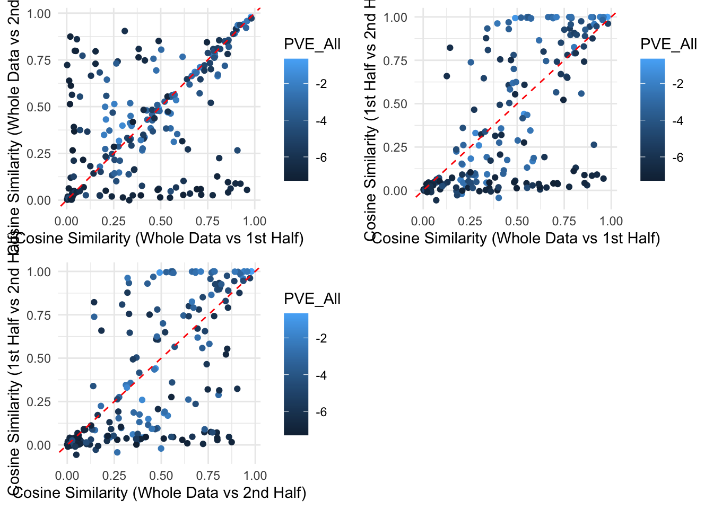
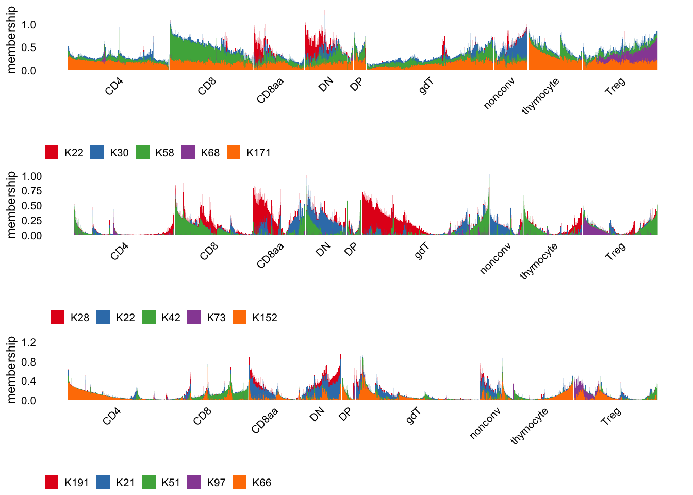
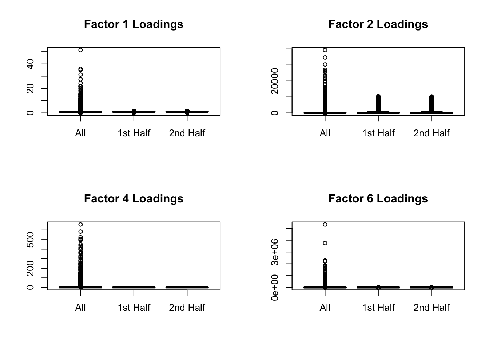

Last updated: 2025-10-29
Checks: 7 0
Knit directory: immgen-t-factors/analysis/
This reproducible R Markdown analysis was created with workflowr (version 1.7.2). The Checks tab describes the reproducibility checks that were applied when the results were created. The Past versions tab lists the development history.
Great! Since the R Markdown file has been committed to the Git repository, you know the exact version of the code that produced these results.
Great job! The global environment was empty. Objects defined in the global environment can affect the analysis in your R Markdown file in unknown ways. For reproduciblity it’s best to always run the code in an empty environment.
The command set.seed(1) was run prior to running the
code in the R Markdown file. Setting a seed ensures that any results
that rely on randomness, e.g. subsampling or permutations, are
reproducible.
Great job! Recording the operating system, R version, and package versions is critical for reproducibility.
Nice! There were no cached chunks for this analysis, so you can be confident that you successfully produced the results during this run.
Great job! Using relative paths to the files within your workflowr project makes it easier to run your code on other machines.
Great! You are using Git for version control. Tracking code development and connecting the code version to the results is critical for reproducibility.
The results in this page were generated with repository version 1369397. See the Past versions tab to see a history of the changes made to the R Markdown and HTML files.
Note that you need to be careful to ensure that all relevant files for
the analysis have been committed to Git prior to generating the results
(you can use wflow_publish or
wflow_git_commit). workflowr only checks the R Markdown
file, but you know if there are other scripts or data files that it
depends on. Below is the status of the Git repository when the results
were generated:
Ignored files:
Ignored: .Rhistory
Ignored: .Rproj.user/
Ignored: analysis/.Rhistory
Ignored: code/.Rhistory
Ignored: docs 2/
Untracked files:
Untracked: .DS_Store
Untracked: .gitignore
Untracked: analysis/.DS_Store
Untracked: analysis/conditional_analysis.rmd
Untracked: analysis/further_validation_f68.rmd
Untracked: analysis/level2_organ.rmd
Untracked: code/.DS_Store
Untracked: code/Figure1.R
Untracked: code/ROC.R
Untracked: code/analyze_protein_selected.R
Untracked: code/analyze_protein_selected.sbatch
Untracked: code/analyze_protein_selected_lognorm.R
Untracked: code/analyze_protein_selected_lognorm.sbatch
Untracked: code/analyze_protein_selected_positive.R
Untracked: code/analyze_protein_selected_positive.sbatch
Untracked: code/compare_greedy_back.R
Untracked: code/replicate_whole_data.sbatch
Untracked: data/.DS_Store
Untracked: data/annot_level1.rds
Untracked: data/annot_level2.rds
Untracked: data/condition_broad.rds
Untracked: data/condition_broad_AUC.rds
Untracked: data/condition_broad_AUC_CD8.rds
Untracked: data/condition_detailed.rds
Untracked: data/condition_detailed_AUC.rds
Untracked: data/condition_detailed_AUC_CD8.rds
Untracked: data/conditional_analysis_factor.rds
Untracked: data/conditional_analysis_factor_stats.rds
Untracked: data/factor_matching_results.csv
Untracked: data/factor_matching_results_noback.csv
Untracked: data/fit1_summary.qs
Untracked: data/fit1_summary_noback.qs
Untracked: data/fit2_summary.qs
Untracked: data/fit2_summary_noback.qs
Untracked: data/flash_fixed_F_pm.rds
Untracked: data/flash_fixed_loading.rds
Untracked: data/flashier_snmf_summary.rds
Untracked: data/level_1_AUC.rds
Untracked: data/moran_list_umap.rds
Untracked: data/organ.rds
Untracked: data/organ_AUC.rds
Untracked: data/organ_AUC_healthy.rds
Untracked: data/organ_healthy.rds
Untracked: data/protein_flash_selected_summary.rds
Untracked: data/protein_flash_selected_summary_lognorm.rds
Untracked: data/protein_flash_selected_summary_pos.rds
Untracked: data/protein_mat.rds
Untracked: data/protein_mat_normalized.rds
Untracked: data/protein_mat_normalized_lognorm.rds
Untracked: data/replicate_whole_data.sbatch
Untracked: data/seurat_meta.rds
Untracked: data/umap_result.rds
Untracked: figures/
Unstaged changes:
Modified: analysis/half_validation_hungarian.rmd
Deleted: code/halves_validation.R
Note that any generated files, e.g. HTML, png, CSS, etc., are not included in this status report because it is ok for generated content to have uncommitted changes.
These are the previous versions of the repository in which changes were
made to the R Markdown
(analysis/half_validation_hungarian_noback.rmd) and HTML
(docs/half_validation_hungarian_noback.html) files. If
you’ve configured a remote Git repository (see
?wflow_git_remote), click on the hyperlinks in the table
below to view the files as they were in that past version.
| File | Version | Author | Date | Message |
|---|---|---|---|---|
| Rmd | 1369397 | Ziang Zhang | 2025-10-29 | workflowr::wflow_publish("analysis/half_validation_hungarian_noback.rmd") |
| html | 62bd0d6 | Ziang Zhang | 2025-10-21 | Build site. |
| Rmd | 25ebc92 | Ziang Zhang | 2025-10-21 | workflowr::wflow_publish("analysis/half_validation_hungarian_noback.rmd") |
This time, we repeat the validation analysis using the halved-analysis without backfitting.
library(ggplot2)
library(dplyr)
Attaching package: 'dplyr'The following objects are masked from 'package:stats':
filter, lagThe following objects are masked from 'package:base':
intersect, setdiff, setequal, unionlibrary(fastTopics)
library(qs)qs 0.27.3. Announcement: https://github.com/qsbase/qs/issues/103library(cowplot)
library(ggrepel)
data_path <- "../data/"
code_path <- "../code/"
# data_path <- "data/"
# code_path <- "code/"
seurat_meta <- readRDS(paste0(data_path, "seurat_meta.rds"))
flashier_snmf_summary <- readRDS(paste0(data_path, "flashier_snmf_summary.rds"))
flashier_snmf_summary1 <- qs::qread(paste0(data_path, "fit1_summary_noback.qs"))
flashier_snmf_summary2 <- qs::qread(paste0(data_path, "fit2_summary_noback.qs"))Define a function to compute cosine similarity:
compute_cosine_sim_matrix <- function(L1, L2){
norms1 <- apply(L1, 2, function(x){sqrt(sum(x^2))})
norms1[norms1 == 0] <- Inf
norms2 <- apply(L2, 2, function(x){sqrt(sum(x^2))})
norms2[norms2 == 0] <- Inf
L1_normalized <- t(t(L1)/norms1)
L2_normalized <- t(t(L2)/norms2)
#compute matrix of cosine similarities
cosine_sim_matrix <- crossprod(L1_normalized, L2_normalized)
return(cosine_sim_matrix)
}Normalize the factor matrices:
F_all <- flashier_snmf_summary$F_pm
F_1 <- flashier_snmf_summary1$F_pm
F_2 <- flashier_snmf_summary2$F_pm
L_all <- flashier_snmf_summary$L_pm
L_1 <- flashier_snmf_summary1$L_pm
L_2 <- flashier_snmf_summary2$L_pmF_1 <- scale(F_1, center = FALSE, scale = TRUE)
F_2 <- scale(F_2, center = FALSE, scale = TRUE)
F_all <- scale(F_all, center = FALSE, scale = TRUE)Now, let’s match the factors from the whole data analysis (F_all) to the two halves (F_1 and F_2). This time, we will be using the Hungarian algorithm to find the optimal matching.
# Subset to have the common set of genes
common_genes_all_1 <- intersect(rownames(F_all), rownames(F_1))
common_genes_all_2 <- intersect(rownames(F_all), rownames(F_2))
common_genes_all <- intersect(common_genes_all_1, common_genes_all_2)
F_all <- F_all[common_genes_all, ]
F_1 <- F_1[common_genes_all, ]
F_2 <- F_2[common_genes_all, ]cos_1 <- compute_cosine_sim_matrix(F_all, F_1)
assignment_problem_1 <- RcppHungarian::HungarianSolver(-1*cos_1)
cos_2 <- compute_cosine_sim_matrix(F_all, F_2)
assignment_problem_2 <- RcppHungarian::HungarianSolver(-1*cos_2)
# summarize the results into a data frame
match_results <- data.frame(
Factor_All = 1:ncol(F_all),
Best_Match_F1 = assignment_problem_1$pairs[,2],
Best_Match_F2 = assignment_problem_2$pairs[,2],
cosine_F1 = cos_1[assignment_problem_1$pairs],
cosine_F2 = cos_2[assignment_problem_2$pairs]
)
match_results[c(1,2,3,5,22,58, 68, 171), 1:5] Factor_All Best_Match_F1 Best_Match_F2 cosine_F1 cosine_F2
1 1 1 1 0.9797172 0.9797499
2 2 2 2 0.9407071 0.9401970
3 3 51 28 0.3448516 0.3971751
5 5 60 174 0.4142203 0.3364021
22 22 28 191 0.4257485 0.4796079
58 58 42 51 0.4763369 0.6936271
68 68 73 97 0.6534390 0.6184635
171 171 152 66 0.2964352 0.3984163We should also take a look at the cosine similarity between the matched factors in F_1 and F_2.
cos_f1_f1 <- compute_cosine_sim_matrix(F_1[, match_results$Best_Match_F1], F_2[, match_results$Best_Match_F2])
match_results$cosine_F1_F2 <- diag(cos_f1_f1)
match_results[c(1,2,3,5,22,58, 68, 171), c(2:6)] Best_Match_F1 Best_Match_F2 cosine_F1 cosine_F2 cosine_F1_F2
1 1 1 0.9797172 0.9797499 0.99999528
2 2 2 0.9407071 0.9401970 0.99980467
3 51 28 0.3448516 0.3971751 0.04160781
5 60 174 0.4142203 0.3364021 0.35690930
22 28 191 0.4257485 0.4796079 0.09602738
58 42 51 0.4763369 0.6936271 0.61872351
68 73 97 0.6534390 0.6184635 0.74552030
171 152 66 0.2964352 0.3984163 0.25945016Plot the scatterplot of the cosine similarities, and see how the similarities vary with PVE:
match_results$PVE_All <- log10(flashier_snmf_summary$pve[match_results$Factor_All])p1 <- ggplot(match_results, aes(x = cosine_F1, y = cosine_F2, color = PVE_All)) +
geom_point() +
geom_abline(slope = 1, intercept = 0, linetype = "dashed", color = "red") +
labs(x = "Cosine Similarity (Whole Data vs 1st Half)", y = "Cosine Similarity (Whole Data vs 2nd Half)") +
theme_minimal()
p2 <- ggplot(match_results, aes(x = cosine_F1, y = cosine_F1_F2, color = PVE_All)) +
geom_point() +
geom_abline(slope = 1, intercept = 0, linetype = "dashed", color = "red") +
labs(x = "Cosine Similarity (Whole Data vs 1st Half)", y = "Cosine Similarity (1st Half vs 2nd Half)") +
theme_minimal()
# Whole Data - 2nd Half against 1st Half - 2nd Half
p3 <- ggplot(match_results, aes(x = cosine_F2, y = cosine_F1_F2, color = PVE_All)) +
geom_point() +
geom_abline(slope = 1, intercept = 0, linetype = "dashed", color = "red") +
labs(x = "Cosine Similarity (Whole Data vs 2nd Half)", y = "Cosine Similarity (1st Half vs 2nd Half)") +
theme_minimal()
plot_grid(p1, p2, p3, nrow = 2)
This table should be a useful reference, let’s save it as a csv file.
write.csv(match_results, file = paste0(data_path, "factor_matching_results_noback.csv"), row.names = FALSE)Let’s find the factors in F_all that have a good match (similarity > 0.5) in either F_1 or F_2.
# match_results$MaxCorr <- pmax(match_results$Correlation_F1, match_results$Correlation_F2)
match_results$MaxCosine <- pmax(match_results$cosine_F1, match_results$cosine_F2)
# select factors with similarity > 0.5 and between F_1 and F_2 > 0.5
selected_factors_F_all <- match_results %>%
filter(MaxCosine > 0.5 & cosine_F1_F2 > 0.5)
# filter(MaxCorr > 0.5 & Correlation_F1_F2 > 0.5)
nrow(selected_factors_F_all)[1] 56What are the final selected factors in F_all?
selected_factors_F_all$Factor_All [1] 1 2 4 6 8 9 11 12 13 14 15 16 18 24 26 27 29 30 31
[20] 33 35 36 37 39 40 43 47 48 49 50 54 56 58 60 61 66 68 74
[39] 76 77 84 89 96 107 118 121 122 123 125 126 135 154 156 163 168 182Structure plot:
filter_cells_by_total_membership <- function (L, max_val = 10, numiter = 10) {
n <- nrow(L)
rows <- 1:n
for (iter in 1:numiter) {
x <- rowSums(L)
cat(sprintf("%d. Filtered out %d cells.\n",iter,sum(x > max_val)))
i <- which(x <= max_val)
L <- L[i,]
rows <- rows[i]
d <- apply(L,2,max)
L <- scale_cols(L,1/d)
}
return(rows)
}
scale_cols <- function (A, b)
t(t(A) * b)# Take out cells for visualization
D_all <- diag(1 / apply(L_all, 2, function(x) max(x)))
L_all <- L_all %*% D_all
cells_all <- filter_cells_by_total_membership(L_all, numiter = 12)1. Filtered out 69 cells.
2. Filtered out 178 cells.
3. Filtered out 157 cells.
4. Filtered out 299 cells.
5. Filtered out 232 cells.
6. Filtered out 175 cells.
7. Filtered out 193 cells.
8. Filtered out 140 cells.
9. Filtered out 46 cells.
10. Filtered out 22 cells.
11. Filtered out 1 cells.
12. Filtered out 0 cells.L_all <- L_all[cells_all,]
d <- apply(L_all,2,max)
L_all <- scale_cols(L_all,1/d)
D_all <- d * D_all
seurat_meta_all <- seurat_meta[match(rownames(L_all), seurat_meta$cellID),]
D_1 <- diag(1 / apply(L_1, 2, function(x) max(x)))
L_1 <- L_1 %*% D_1
cells_1 <- filter_cells_by_total_membership(L_1, numiter = 12)1. Filtered out 52 cells.
2. Filtered out 58 cells.
3. Filtered out 23 cells.
4. Filtered out 9 cells.
5. Filtered out 2 cells.
6. Filtered out 0 cells.
7. Filtered out 0 cells.
8. Filtered out 0 cells.
9. Filtered out 0 cells.
10. Filtered out 0 cells.
11. Filtered out 0 cells.
12. Filtered out 0 cells.L_1 <- L_1[cells_1,]
d <- apply(L_1,2,max)
L_1 <- scale_cols(L_1,1/d)
D_1 <- d * D_1
seurat_meta_1 <- seurat_meta[match(rownames(L_1), seurat_meta$cellID),]
D_2 <- diag(1 / apply(L_2, 2, function(x) max(x)))
L_2 <- L_2 %*% D_2
cells_2 <- filter_cells_by_total_membership(L_2, numiter = 12)1. Filtered out 47 cells.
2. Filtered out 42 cells.
3. Filtered out 9 cells.
4. Filtered out 1 cells.
5. Filtered out 0 cells.
6. Filtered out 0 cells.
7. Filtered out 0 cells.
8. Filtered out 0 cells.
9. Filtered out 0 cells.
10. Filtered out 0 cells.
11. Filtered out 0 cells.
12. Filtered out 0 cells.L_2 <- L_2[cells_2,]
d <- apply(L_2,2,max)
L_2 <- scale_cols(L_2,1/d)
D_2 <- d * D_2
seurat_meta_2 <- seurat_meta[match(rownames(L_2), seurat_meta$cellID),]set.seed(12345)
annotation_sub <- seurat_meta_all$annotation_level1
cells <- which(annotation_sub == "CD4" | annotation_sub == "CD8")
cells <- sample(cells,1e5)
cells <- sort(c(cells,which(annotation_sub != "CD4" & annotation_sub != "CD8")))
selected_all_Factors <- c(22, 30, 58, 68, 171)
L_all_plot <- L_all[cells,selected_all_Factors]
colnames(L_all_plot) <- paste0("K",selected_all_Factors)
p_all <- structure_plot(L_all_plot, gap = 10, n = 6000,
topics = paste0("K",selected_all_Factors),
grouping = annotation_sub[cells]) +
labs(y = "membership",color = "",fill = "") +
theme(legend.position = "bottom")Warning: `aes_string()` was deprecated in ggplot2 3.0.0.
ℹ Please use tidy evaluation idioms with `aes()`.
ℹ See also `vignette("ggplot2-in-packages")` for more information.
ℹ The deprecated feature was likely used in the fastTopics package.
Please report the issue at
<https://github.com/stephenslab/fastTopics/issues>.
This warning is displayed once every 8 hours.
Call `lifecycle::last_lifecycle_warnings()` to see where this warning was
generated.## structure plot for the first half data
selected_1_Factors <- match_results$Best_Match_F1[match(selected_all_Factors,match_results$Factor_All)]
annotation_sub1 <- seurat_meta_1$annotation_level1
cells1 <- which(annotation_sub1 == "CD4" | annotation_sub1 == "CD8")
cells1 <- sample(cells1,5e4)
cells1 <- sort(c(cells1,which(annotation_sub1 != "CD4" & annotation_sub1 != "CD8")))
L_1_plot <- L_1[cells1, selected_1_Factors]
colnames(L_1_plot) <- paste0("K",selected_1_Factors)
p_1 <- structure_plot(L_1_plot, gap = 10, n = 6000,
topics = paste0("K",selected_1_Factors),
grouping = annotation_sub1[cells1]) +
labs(y = "membership",color = "",fill = "") +
# ylim(0,0.2) +
theme(legend.position = "bottom")
## structure plot for the second half data
selected_2_Factors <- match_results$Best_Match_F2[match(selected_all_Factors, match_results$Factor_All)]
annotation_sub2 <- seurat_meta_2$annotation_level1
cells2 <- which(annotation_sub2 == "CD4" | annotation_sub2 == "CD8")
cells2 <- sample(cells2,5e4)
cells2 <- sort(c(cells2,which(annotation_sub2 != "CD4" & annotation_sub2 != "CD8")))
L_2_plot <- L_2[cells2, selected_2_Factors]
colnames(L_2_plot) <- paste0("K",selected_2_Factors)
p_2 <- structure_plot(L_2_plot, gap = 10, n = 6000,
topics = paste0("K",selected_2_Factors),
grouping = annotation_sub2[cells2]) +
labs(y = "membership",color = "",fill = "") +
# ylim(0,0.2) +
theme(legend.position = "bottom")plot_grid(p_all, p_1, p_2, nrow = 3)Ignoring unknown labels:
• colour : ""
Ignoring unknown labels:
• colour : ""
Ignoring unknown labels:
• colour : ""
I am also interested to know whether the loading from each half analysis (without backfitting) produces similar outlier cells as the whole data analysis.
To make the comparison clear, let’s scale by median.
L_all <- flashier_snmf_summary$L_pm
d <- apply(L_all,2,median)
L_all <- scale_cols(L_all,1/d)
L_1 <- flashier_snmf_summary1$L_pm
d <- apply(L_1,2,median)
L_1 <- scale_cols(L_1,1/d)
L_2 <- flashier_snmf_summary2$L_pm
d <- apply(L_2,2,median)
L_2 <- scale_cols(L_2,1/d)Let’s define outlier cells as those that have loading greater than median + 3 * IQR for each factor.
find_outlier_cells <- function(L){
outlier_list <- list()
for (k in 1:ncol(L)){
loadings <- L[,k]
threshold <- median(loadings) + 3 * IQR(loadings)
outlier_cells <- which(loadings > threshold)
outlier_list[[k]] <- outlier_cells
}
return(outlier_list)
}
outliers_all <- find_outlier_cells(L_all)
outliers_1 <- find_outlier_cells(L_1)
outliers_2 <- find_outlier_cells(L_2)Keep track of the number of outlier cells for each factor:
num_outliers_all <- sapply(outliers_all, length)
prop_outliers_all <- num_outliers_all / nrow(L_all)
num_outliers_1 <- sapply(outliers_1, length)
prop_outliers_1 <- num_outliers_1 / nrow(L_1)
num_outliers_2 <- sapply(outliers_2, length)
prop_outliers_2 <- num_outliers_2 / nrow(L_2)Summarize the distribution of outlier proportions:
summary(prop_outliers_all) Min. 1st Qu. Median Mean 3rd Qu. Max.
0.000653 0.019638 0.030094 0.039757 0.046309 0.228147 summary(prop_outliers_1) Min. 1st Qu. Median Mean 3rd Qu. Max.
0.00000 0.02568 0.04806 0.06736 0.11179 0.19033 summary(prop_outliers_2) Min. 1st Qu. Median Mean 3rd Qu. Max.
0.00000 0.02654 0.04708 0.06626 0.10830 0.18974 Turning off the backfitting does not decrease the number of outlier cells detected. Let’s see if the extent of outlierness (loading values) are similar between the whole data and the halves.
Take a look at the boxplot for some matched factors:
par(mfrow = c(2,2))
for (i in 1:4) {
boxplot(L_all[,selected_factors_F_all$Factor_All[i]], L_1[,selected_factors_F_all$Best_Match_F1[i]], L_2[,selected_factors_F_all$Best_Match_F2[i]], names = c("All","1st Half","2nd Half"), main = paste0("Factor ", selected_factors_F_all$Factor_All[i], " Loadings"))
}
sessionInfo()R version 4.5.1 (2025-06-13)
Platform: aarch64-apple-darwin20
Running under: macOS Sequoia 15.6.1
Matrix products: default
BLAS: /Library/Frameworks/R.framework/Versions/4.5-arm64/Resources/lib/libRblas.0.dylib
LAPACK: /Library/Frameworks/R.framework/Versions/4.5-arm64/Resources/lib/libRlapack.dylib; LAPACK version 3.12.1
locale:
[1] en_US.UTF-8/en_US.UTF-8/en_US.UTF-8/C/en_US.UTF-8/en_US.UTF-8
time zone: America/Toronto
tzcode source: internal
attached base packages:
[1] stats graphics grDevices utils datasets methods base
other attached packages:
[1] ggrepel_0.9.6 cowplot_1.2.0 qs_0.27.3 fastTopics_0.7-25
[5] dplyr_1.1.4 ggplot2_4.0.0
loaded via a namespace (and not attached):
[1] gtable_0.3.6 xfun_0.53 bslib_0.9.0
[4] htmlwidgets_1.6.4 RApiSerialize_0.1.4 lattice_0.22-7
[7] quadprog_1.5-8 vctrs_0.6.5 tools_4.5.1
[10] generics_0.1.4 parallel_4.5.1 tibble_3.3.0
[13] pkgconfig_2.0.3 Matrix_1.7-3 data.table_1.17.8
[16] SQUAREM_2021.1 RColorBrewer_1.1-3 S7_0.2.0
[19] RcppParallel_5.1.11-1 lifecycle_1.0.4 truncnorm_1.0-9
[22] compiler_4.5.1 farver_2.1.2 stringr_1.5.2
[25] git2r_0.36.2 progress_1.2.3 RhpcBLASctl_0.23-42
[28] httpuv_1.6.16 htmltools_0.5.8.1 sass_0.4.10
[31] yaml_2.3.10 lazyeval_0.2.2 plotly_4.11.0
[34] crayon_1.5.3 later_1.4.4 pillar_1.11.1
[37] jquerylib_0.1.4 whisker_0.4.1 tidyr_1.3.1
[40] uwot_0.2.3 cachem_1.1.0 gtools_3.9.5
[43] tidyselect_1.2.1 digest_0.6.37 Rtsne_0.17
[46] stringi_1.8.7 reshape2_1.4.4 purrr_1.1.0
[49] ashr_2.2-63 labeling_0.4.3 rprojroot_2.1.1
[52] fastmap_1.2.0 grid_4.5.1 cli_3.6.5
[55] invgamma_1.2 magrittr_2.0.4 dichromat_2.0-0.1
[58] withr_3.0.2 prettyunits_1.2.0 scales_1.4.0
[61] promises_1.3.3 rmarkdown_2.30 httr_1.4.7
[64] workflowr_1.7.2 hms_1.1.3 stringfish_0.17.0
[67] pbapply_1.7-4 evaluate_1.0.5 RcppHungarian_0.3
[70] knitr_1.50 irlba_2.3.5.1 viridisLite_0.4.2
[73] rlang_1.1.6 Rcpp_1.1.0 mixsqp_0.3-54
[76] glue_1.8.0 rstudioapi_0.17.1 jsonlite_2.0.0
[79] plyr_1.8.9 R6_2.6.1 fs_1.6.6